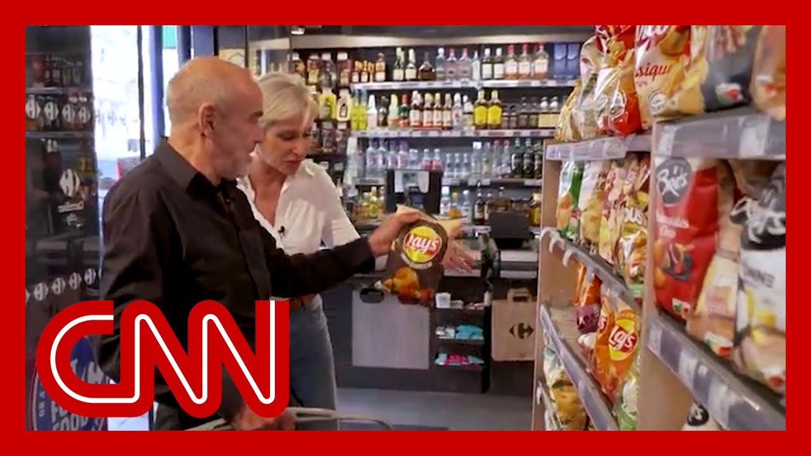

【“去特朗普化”：法国应用程序标记欧洲抵制的美国公司】
Summary: Breaking news on White House attacking Germany over far-right party AfD, classified as extremist, amid growing anti-American sentiment and consumer boycotts of US goods in Europe.
摘要： 白宫因德国极右翼政党AfD被列为极端组织而攻击德国，同时欧洲反美情绪高涨，消费者抵制美国商品。

⏱️ Estimated Reading Time: 13 min
Breaking news, the white House unleashing an all out assault on Germany over a right wing political party.
突发新闻，白宫因一个右翼政党对德国发动全面攻击。
Secretary of State Rubio, Elon Musk and Vice President Vance attacking America's longti Ally Vance, even accusing the Germans of rebuilding the Berlin Wall.
国务卿卢比奥、埃隆·马斯克和副总统万斯攻击美国长期盟友德国，甚至指责德国人重建柏林墙。
This came after Germany's domestic intelligence agency classified the far right political party in Germany, the AfD, as extremis which makes it easier for them to have surveillance on AfD is an anti-immigration party with a co-leader who has been fined for using Nazi slogans.
此前，德国国内情报机构将极右翼政党AfD列为极端组织，使其更容易受到监视。AfD是一个反移民政党，其联合领导人曾因使用纳粹口号被罚款。
But the white House once again is coming to its defense as anti sentiment is growing overseas amid Trump's trade war.
但随着特朗普贸易战引发海外反美情绪高涨，白宫再次为其辩护。
And Melissa Bell has this special report tonight OutFront.
梅丽莎·贝尔今晚将在《前线》节目中带来特别报道。
Across Europe, a quiet protest is playing out in supermarket aisles.
在欧洲各地，超市货架上正上演一场无声的抗议。
American products left untouched The hashtag boycott Trump is gaining traction as Facebook groups rally Europea to push back against U.S. policies, with their wallets.
美国商品无人问津，#抵制特朗普标签在Facebook群组中流行，欧洲人用钱包反击美国政策。
Michele joined a French group in As long as we are aggressive, policy of American administration, we want to make oppression to st His group even provides an app called Detroit Amplify Yo that lets consumers know if a company's funding traces back to the Unite
米歇尔加入了一个法国团体，只要美国政府的政策具有侵略性，他们就想施加压力。该团体甚至提供了一款名为Detroit Amplify Yo的应用程序，让消费者知道公司资金是否来自美国。
Sometimes I wonder if it is so. We just use the app and it's it's yes, it's it's American. So Amer
有时我会想是否如此。我们只需使用应用程序，然后发现它确实是美国的。
Well, we'll try with that. We look like this is a very Fren very French. But sometimes we have surprised.
好吧，我们会尝试。我们看起来非常法国，但有时会有意外。
Yes, you can buy, but sometimes you get surprises because you find that a company that you thought was French has in fact been outside America
是的，你可以购买，但有时会有意外，因为你发现你以为的法国公司实际上来自美国。
And that's the point of the exac one recent survey in France found that six out of ten people support consumer boycotts of U.S. goods.
这正是关键所在。法国最近一项调查发现，十分之六的人支持抵制美国商品。
The poll also shows that the har American brands included Tesla, McDonald's, Coca-Cola and Victoria's Secret.
调查还显示，受抵制的美国品牌包括特斯拉、麦当劳、可口可乐和维多利亚的秘密。
But it's not just products travel to the US from Europe is also do
但不仅是产品，欧洲赴美旅游也在减少。
In March, visits dropped 17% compared to the same time last y
3月份，访问量同比下降17%。
It's changed the way we travel. It's changed the way we consume. There's hesitation and fear about, going to the United State
这改变了我们的旅行方式，也改变了我们的消费方式。人们对前往美国感到犹豫和恐惧。
So Guillen, who asks us not to use her last name as she has family in the United States, joined a small group of American protesters on Thursd
因此，吉伦（她要求不透露姓氏，因为家人在美国）周四加入了一小群美国抗议者。
Hey, hey. Ho ho. Just here in Paris, there have been three anti-Trump protests in as many w
嘿，嘿。嗬，嗬。仅在巴黎，三周内就发生了三场反特朗普抗议活动。
including this one at the heart what is the traditional day of demonstration here in Paris.
包括这场在巴黎传统示威日举行的抗议。
The May day protests with a decidedly American feel.
这场五一抗议活动带有明显的美国色彩。
Now, this group includes not just Americans who live here but also some of their European and American tourists who just taking a day off of their vacation to make their voices heard.
现在，这个团体不仅包括居住在此的美国人，还有一些欧洲和美国游客，他们休假一天来发声。
I'm here for my grandparents, who were immigrants from Italy.
我来这里是为了我的祖父母，他们是从意大利移民来的。
And, they were there was prejudice against them, and they were very, very proud to be in America.
他们曾遭受偏见，但他们非常非常自豪能成为美国人。
And I'm not sure they would be t
我不确定他们现在还会这样想。
Melissa Bell, CNN, Paris.
CNN梅丽莎·贝尔，巴黎报道。
Last year. Fareed Zakaria is OutFront now, host of Fareed Zakaria GPS.
去年。法里德·扎卡里亚现在是《前线》节目主持人，主持《法里德·扎卡里亚GPS》。
And, Fareed, you know, you see Melissa's report. It's amazing that Apple is fascinating in and of itself.
法里德，你知道，你看了梅丽莎的报道。苹果本身就很吸引人。
But the anti-American, you know, sentiment feeling boyc
但反美情绪和抵制行动正在蔓延。
You know, we're seeing it. Tourism numbers are down. I mean, and sure Tesla has a specific link to Mus
我们看到旅游数字下降。当然，特斯拉与马斯克有特定联系。
He's a lightning rod himself. But the numbers out of Sweden today were right at 80% drop in Tesla sales. France wasn't far behind.
他本人就是个避雷针。但今天瑞典的数据显示特斯拉销量下降了80%，法国也不遑多让。
I mean, these are real numbers. This is not just talk. This is action. Aaron.
这些是真实数字，不只是空谈，而是行动。
It's really remarkable because for the last 30 or 40 ye ever since the fall of the Berli this wave of global integration has resulted in American brands the leading global brands in the everything from Coca-Cola to McD
这非常引人注目，因为过去30到40年，自柏林墙倒塌以来，全球一体化浪潮使美国品牌成为全球领先品牌，从可口可乐到麦当劳。
which were always big. But Tesla and of course all the informatio technology companies. Google, Ap
它们一直很大。但特斯拉和所有信息技术公司，如谷歌、苹果。
You know, we've been riding this extraordi wave of American brands being considered the leading brands in the world.
我们一直处于美国品牌被视为世界领先品牌的非凡浪潮中。
Take American universities, Harvard, Yale, Princeton, all of this is the world that in a way, Donald Trump inhe
以美国大学为例，哈佛、耶鲁、普林斯顿，这些都是特朗普在某种程度上继承的世界。
And somehow systematically, he is tarnishing every one of these brands.
但不知何故，他正在系统地玷污这些品牌。
He's attacking the American univ he's doing things that are tarni these global brands because he's so alienating the rest of the world.
他攻击美国大学，他的行为正在玷污这些全球品牌，因为他正在疏远世界其他地区。
And I think it's important to re you know, it's not just people buying Coca Cola. It's people who are people going to come and study in the United if they think, as Marco Rubio has kept telling them, we can revoke your visa anytime we can deport you any time we wa
重要的是，不仅是购买可口可乐的人，还有那些想来美国学习的人，如果他们认为，正如马可·卢比奥一直告诉他们的那样，我们可以随时撤销你的签证，随时驱逐你。
So you're going to see a kind of a slow stagnation of o of some of the crown jewels of A
因此，你将看到美国一些皇冠上的明珠逐渐停滞。
I remember the book cities on th I think it was back in the 80s, but I still remember reading it and even getting to the point, you know what Los Angeles stands
我记得《城市》这本书，大概是80年代的，但我仍然记得读到它，甚至明白洛杉矶代表什么。
To the country and to the world. What America stands for.
对这个国家和世界而言，美国代表什么。
you know, Harry Enten was looking at some this week, Fareed, to this point of what America stands for and the belief that America has a positive impact in the wor
哈利·恩滕本周研究了这一点，关于美国代表什么以及美国对世界有积极影响的信念。
Right? The intangible city on a hill at that, that has fallen in 26 o 29 countries recently surveyed,
对吧？那座无形的山巅之城，在最近调查的26或29个国家中已经跌落。
You know, I know it's impossible to answer this question, you know, fully up at this momen but but what's your feeling on t as to whether the United States can re even if the tariffs become a bad and Trump really does move on pa no evidence he will. But even if that happens, is the damage permanent?
我知道此刻无法完全回答这个问题，但你对美国是否能恢复的看法是什么？即使关税政策失败，特朗普真的改变（没有证据表明他会），但即使如此，损害是永久性的吗？
I don't know, permanent permanent is a big word, but it's it's long lasting becau
我不知道，“永久”是个大词，但影响会持续很长时间，因为
Trump has now been elected twice and I was I was actually surprised by how high the numbers were, in the sense there's still a reservoir of goo
特朗普现在已经两次当选，我实际上对数字如此之高感到惊讶，从某种意义上说，仍然有善意的储备。
There's still a sense that the United States stands for the right things, even though, you know, we're siding with Putin, we're trashing our European alli
人们仍然认为美国代表正确的事物，尽管我们站在普京一边，诋毁我们的欧洲盟友。
We're talking down democracy. So, you know, I think that once you break trust, it's very hard to rebuild.
我们贬低民主。所以我认为一旦信任破裂，就很难重建。
Trust takes a long time to build, and it's very easy to break.
信任需要很长时间建立，却很容易打破。
So I mentioned the issue going on with the AfD right now. Marco Rubio, Elon Musk, JD Vance have been attacking German and Europe overall.
所以我提到了目前AfD的问题。马可·卢比奥、埃隆·马斯克、J.D.万斯一直在攻击德国和整个欧洲。
But Germany, in particular, after the country's political party AfD as extremist
但尤其是德国，在该国政党AfD被列为极端组织后。
Now, that makes it easier for them to surveil it, but they have now classified it as extremist.
这使他们更容易监视它，但他们现在已将其归类为极端组织。
This is a party that the individ I just mentioned, and certainly, Musk and Vance have defended again and again.
这是一个我刚才提到的个人，当然，马斯克和万斯一再为其辩护的政党。
Right. It's an anti-immigration The co-leader has been fined for using Nazi slogans.
是的。这是一个反移民政党，其联合领导人曾因使用纳粹口号被罚款。
So what do you make of now? You know, the party gets labeled by domestic intelligence. And and still there's this rise to its defense.
那么你现在怎么看？该党被国内情报机构标记，却仍有人为其辩护。
Well, what I'm most struck by, A is that Donald Trump for much of his first term, in f I think it was in his, maybe his first inaugural, the first speech he gave at Davo
最让我震惊的是，特朗普在第一个任期的大部分时间里，我认为可能是在他的第一次就职演说，或是他在达沃斯的第一次演讲中。
Musk recently at the World Government Forum. And in Dubai, they talk about ho not going to tell the rest of th how to run their affairs.
马斯克最近在世界政府论坛上，在迪拜，他们谈到不会告诉其他国家如何管理自己的事务。
We we've had enough of these lib international is going around telling the world
我们已经受够了这些自由派国际主义者到处告诉世界该怎么做。
Well then it turns out here they are lecturing Germany on how it shou very sensitive issues of free speech and such.
结果现在他们却在教导德国如何处理非常敏感的言论自由等问题。
Now I have my own issues with it but I think it's very odd for the United States to get a weigh in on a domestic issue in German
我对此有自己的看法，但我认为美国对德国的国内问题指手画脚非常奇怪。
Let's remember Europeans treat free speech diff They don't have a First Amendmen
记住，欧洲人对待言论自由的方式不同，他们没有第一修正案。
And Germany has a very sensitive with regard to far right, extrem nationalist parties.
德国对极右翼极端民族主义政党非常敏感。
And surely anyone who understand history will will have some ability to respect that.
任何了解历史的人都会对此有所尊重。
Yeah. Well, obviously we have seen a different take. Fareed, thank you so much. I really appreciate you taking the time on a Friday nigh
是的。显然我们有不同的看法。法里德，非常感谢你，真的很感谢你在周五晚上抽出时间。